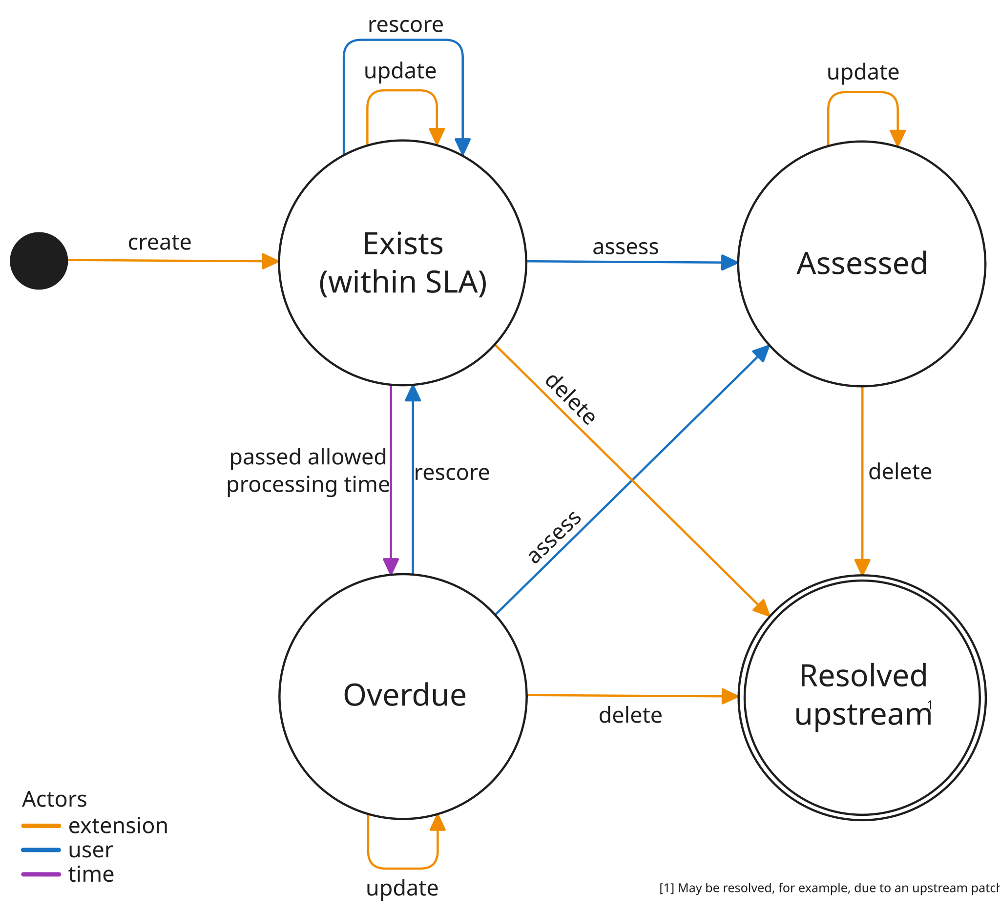

Contribute a new Extension¶
Setup Local Development Environment¶
For instructions on how to setup a local development environment, please refer to Setup Local Development Environment.
Model¶
For information on the ArtefactMetadata model and how to extend it, please
refer to Correlating metadata to OCM.
Extensions Configuration¶
Configuration for each extension should be provided via the interface defined
in the odg.extensions_cfg module
(ref).
A minimal set of configuration parameters is defined by the required base class
ExtensionCfgMixins. In case the extension is expected to be working with
backlog items (more on that topic in extension-triggers and
artefact-enumerator), the BacklogItemMixins base class must be used
instead. Usually, an extension will also require the delivery_service_url to
be defined to be able to access the delivery-service and an interval or
schedule.
Once a suitable dataclass for the extension is defined, it must be added to the
ExtensionsConfiguration class as optional property as well. Such an
ExtensionsConfiguration will be available to the workload in the cluster via
a mounted ConfigMap (more on that topic in helm-chart).
Note
See open-component-model/odg-core@b635470 as an example for this chapter.
Findings Configuration¶
If the extension emits findings (see Correlating metadata to OCM for information on the
supported datatypes), it will also be necessary to add the new finding type to
the findings configuration (see odg.findings_cfg module for the model
definition and odg/findings_cfg.yaml for the example used for the local
development). The most important part are the categorisations which define
the supported “severities” with extra information like for example the
allowed_processing_time. Also, if the findings should be reported as GitHub
issues, the issues property has to be configured accordingly too (see
issue-replicator as well).
Note
See open-component-model/odg-core@15dabcf as an example for this chapter.
Anatomy of an ODG Extension¶
When adding an extension to the Open Delivery Gear, different flavours specifying the level of integration are supported:
Fully Integrated / Running In-Cluster
If an extension is fully integrated into the ODG, it is part of the ODG deployment and running within the same Kubernetes cluster. In this case, the steps in helm-chart, oci-image and python-package can be followed and then the new extension will be automatically part of the ODG deployment (in case it is enabled via configuration). When running fully integrated, it also has to be considered when the extension should run (e.g. regularly as a cronjob, triggered by artefact updates or both) (see extension-triggers).
Lightly Integrated / Running Out-Of-Cluster
In the lightly integrated variant, the extension is running standalone and only uploads
ArtefactMetadatavia the ODG API to make use of the reporting capabilities of the ODG. In that case, the extension must take care of deployment and triggering on its own, hence the chapters extension-triggers, helm-chart, oci-image and python-package can be skipped.
Extension Triggers¶
The Open Delivery Gear currently features two kinds of triggers:
Kubernetes Cronjob
As the title already states, an extension can be modelled as regular Kubernetes Cronjob with a well-defined
schedule. If running as a Cronjob, the extension might have to be able to retrieve the information for which artefacts it should run. This is relevant as the Correlating metadata to OCM requires the data to be always correlated to a certainartefact. This information should be passed to the extension using the extensions-configuration.Artefact-Enumerator
Another common trigger is the artefact-enumerator (see artefact-enumerator extension). The artefact-enumerator itself is a Kubernetes Cronjob as described before which retrieves a list of artefacts via the extensions-configuration. For these artefacts, it periodically checks if there are any updates or the
intervalfor a certain extension has passed, and if that is the case, it creates aBacklogItemcustom resource. The backlog-controller extension itself reconciles these resources and scales the Kubernetes Deployment of the affected extension accordingly. This means, if the new extension uses this trigger, it should be designed to always process theartefactdefined by oneBacklogItemat a time. For that, theprocess_backlog_itemsutility function, defined in theodg.utilmodule (ref), should be used.
Note
The already existing extensions
and their respective implementations can be always used as a reference how
either a Kubernetes Cronjob or a BacklogItem based approach via the
artefact-enumerator might look like.
General Flow¶
The general flow for extensions which are intended to submit Correlating metadata to OCM via the ODG API is usually very similar. In case of findings, there is a well-defined overview of the supported states of a finding (see Fig. 1).

Fig. 1: Finding State Machine¶
If the extension is written in Python, the odg-client should be used which already contains functionality for the below described points:
Fetch existing
ArtefactMetadataentriesAs a first step, the existing
ArtefactMetadataentries for the currentartefactshould be queried using thePOST /artefacts/metadata/queryendpoint of the ODG API. This is required to be able to delete the obsolete entries afterwards in step (3).Submit new entries and update existing ones
The new or updated entries must be submitted using the
PUT /artefacts/metadataendpoint. This will upload new entries to the ODG database or update existing entries in case the definedkeymatches. Apart from the entries containing the findings, an extra entry of typemeta/artefact_scan_infomust be submitted for eachartefact. This info object is used to store information about the last execution and that anartefacthas been scanned in general.Delete obsolete entries
At last, entries which were fetched in step (1) but not submitted anymore in step (2) have to be deleted using the
DELETE /artefacts/metadataendpoint. This is required to ensure that outdated findings or informational entries are not reported anymore.
Artefact-Enumerator¶
If the artefact-enumerator was chosen as trigger in extension-triggers,
it is necessary to inform the artefact-enumerator about this extension and that
it should create BacklogItems for it. Therefore, a minor change must be added
to the artefact-enumerator (see open-component-model/odg-core@68d6f5b).
Note
In the future, it is planned that this must not be explicitly defined
anymore but the artefact-enumerator should instead automatically detect
which extensions require BacklogItems to be created.
Issue-Replicator¶
In order to enable the
issue-replicator extension to also report
findings for the new extension, it must be defined how the findings should be
templated into a GitHub issue. Therefore, a minor change must be added to the
issue-replicator (see open-component-model/odg-core@adb7239).
Also, the issues property of the findings-configuration must be
configured accordingly.
Helm Chart¶
If the extension should be deployed as part of the Open Delivery Gear
deployment, it must be added as subchart to the extensions Helm chart
(ref).
Based on the trigger (see extension-triggers), either a Kubernetes
Deployment or Cronjob should be used. In all cases, it can be assumed that
an extensions-cfg and a findings-cfg ConfigMap exists which may be mounted
as volume. Also, in case an OCM lookup is required, the ocm-repo-mappings
ConfigMap should be used. If any secrets are required by the extension, those
can be mounted as well by referencing the Secrets
secret-factory-<SECRET_TYPE>.
Note
It might be very helpful to use the already existing extensions as reference and adjust them accordingly.
OCI Image¶
In case the extension does not require any additional installations, the general purpose core OCI image can be re-used (ref). The core image contains all the necessary components and extensions. A Helm chart mapping must be added to the build as well.
Python Package¶
The default extensions image built from Dockerfile.extensions installs the
Python package odg-core-libs which contains the sources of all Python
extensions. In case this image is re-used, the module(s) of the new extension
must be included in the Python package (ref).